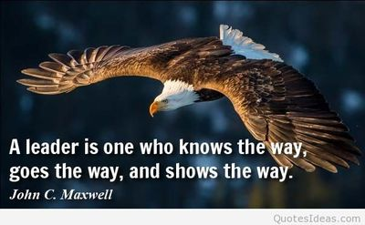
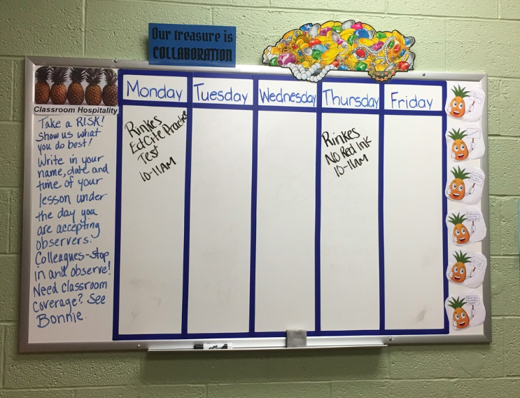
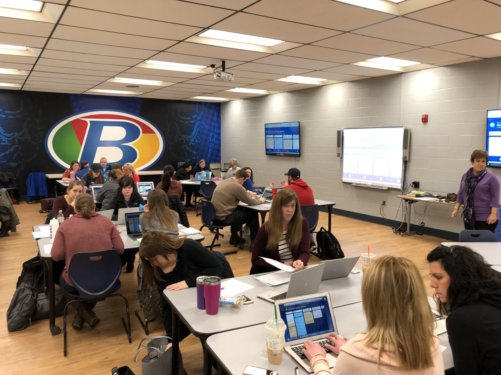

| Home | Leadership | Teaching and Learning | Instructional Design | Multimedia Development | Professional Development | Resume |
|---|
|  | C-1: Technology Coaches inspire and participate in the development and implementation of a shared vision for the comprehensive integration of technology to promote excellence and support transformational change throughout the instructional environment. |
|---|
| Course Artifacts | Field Experience Artifacts |
|---|---|
The above case study is a review of the technology plan for Brecksville-Broadview Heights City School District. In this assignment, we were to analyze a current technology plan for flaws and recommendations for improvement. The current plan is written for 2013-2018. With an extended plan such as this, it is important to re-evaluate due to changing technologies. Currently, it seems as though the plan is to continue growing with the ever-changing technology, however, with my recommendations, the district will instead be able to thrive in terms of technology. I am going to make my recommendations to the board that will bring the district plan to the level of other districts that excel in technology. (Course: Planning for Technology) |
Pineapple Chart  To demonstrate my leadership in our building, I shared a picture of our Pineapple Chart. This is a chart hanging on the teacher's lounge to invite others into our room when we plan on demonstrating a new technology or strategy. I am regularly listed on the chart to share my knowledge with the staff. |
This assignment was completed in hopes of receiving a grant for a specific technology that we felt necessary. We were to analyze our current use of technology and provide ample evidence of the need in the district. I wrote my grant asking for iPads for the classrooms. This will give my students the opportunity to use creative programs to help them in all areas. They will also be able to find information quickly and work with others in centers. Studies have also shown that test scores improve with the use of iPads in the classroom. (Course: Planning for Technology) |
Discovery Leadership Corps  I was chosen by our principal to be a part of this leadership committee. This is a photograph from one of our sessions that we attended training to take back to our staff. We work on various strategies and new technology tools to share with our colleagues. We also help bridge the gap between teachers and administrating by being teacher-leaders. In this particular moment, we were using our padlet to create higher DOK questions for students. |
|
| Home | Leadership | Teaching and Learning | Instructional Design | Multimedia Development | Professional Development | Resume |
|---|
|
|
| Last Revised: March 2019 - ©Elizabeth Rinkes |